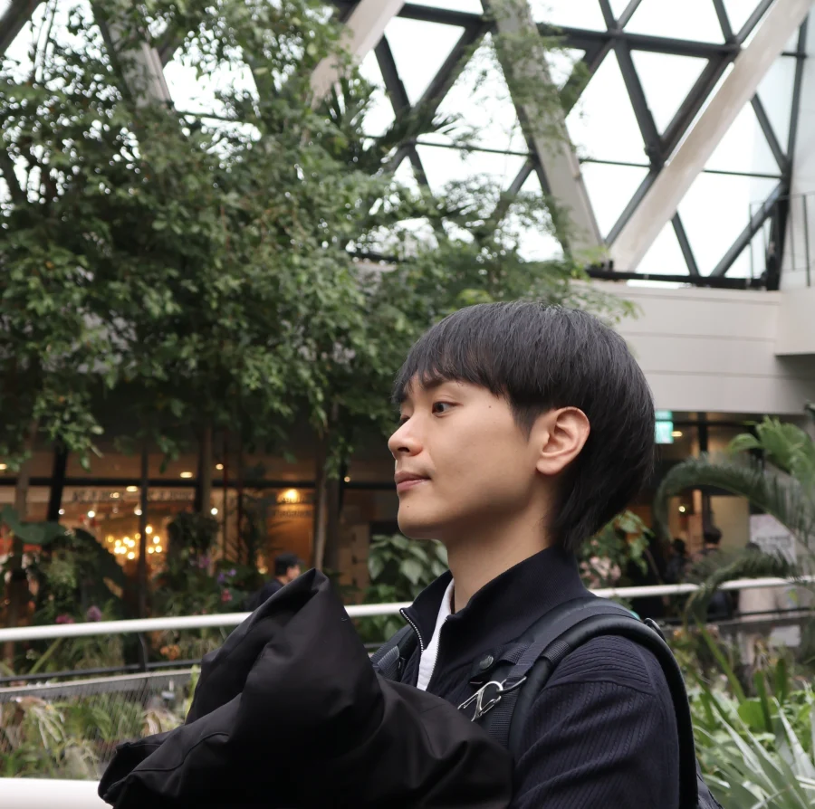

Hi, I’m Jason.
I’m in the integrated MS–PhD program in Artificial Intelligence at Yonsei University, advised by Seon Joo Kim in CIPLAB. Before grad school, I spent about four years in industry as an AI engineer and researcher at several companies. I eventually returned to academia because I wanted to properly learn how to do research, and to pursue questions that felt deeper and more fundamental.
My research is in low-level vision and computational photography — the craft of working with images. Beyond that, I’m drawn to the many lines of research working toward AGI, and — separately — to the question of why our models work as well as they do.
Outside the lab, I love all kinds of workouts — these days it’s kickboxing (since January 2025). I read widely (mostly fiction), and I take photos and draw, trying to understand what makes a good image.